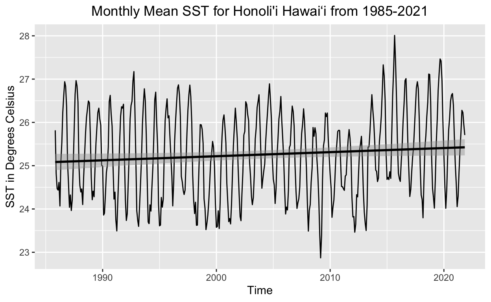
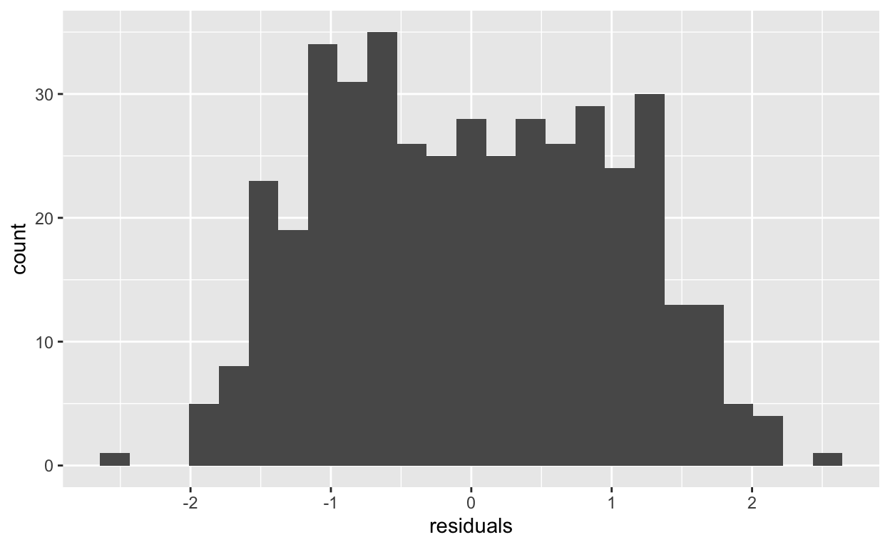
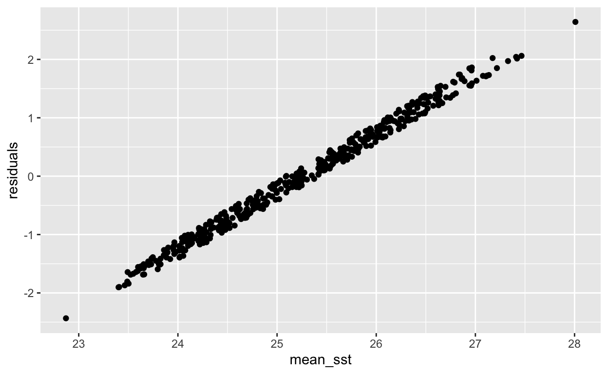
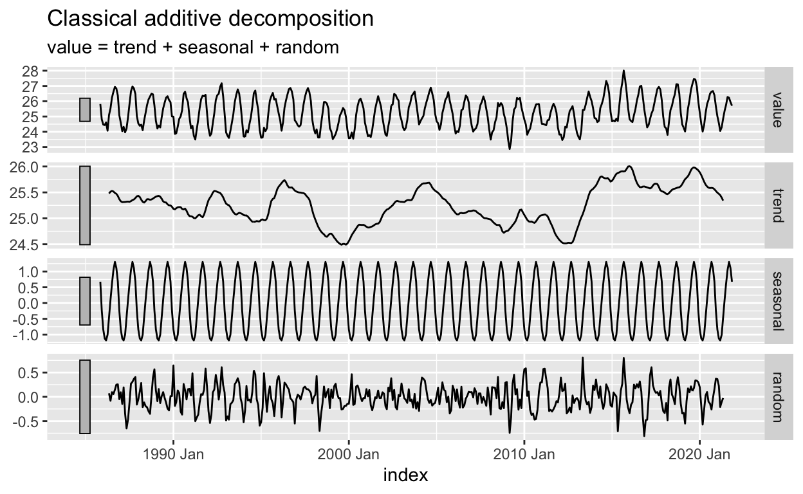
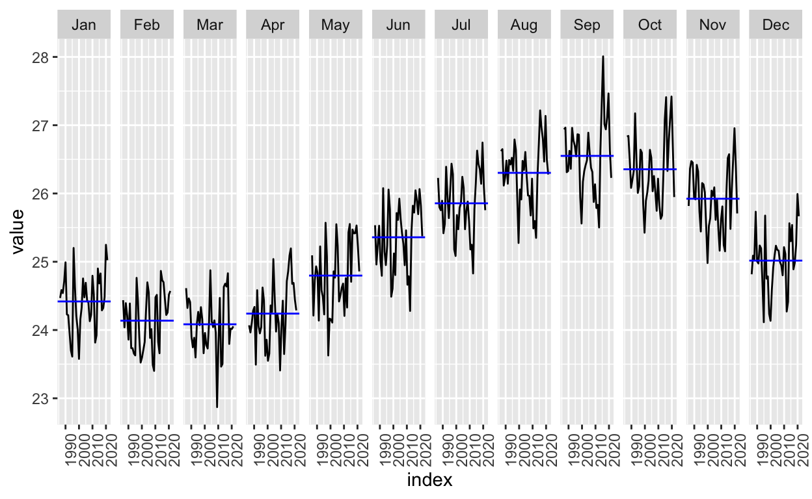
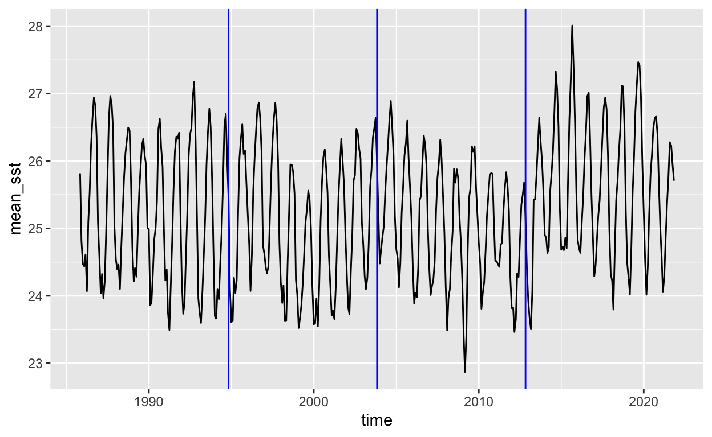
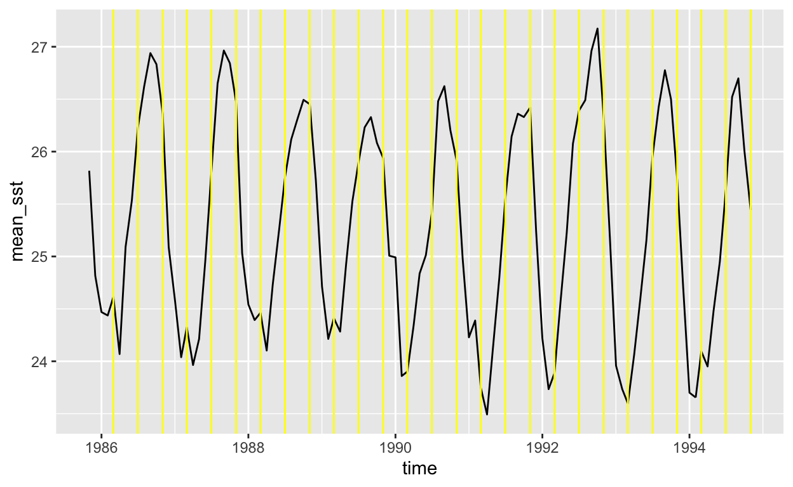
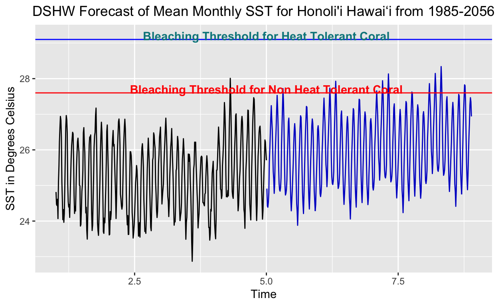

Statistics for Environmental Data Science, Bren School of Environmental Science & Management, UCSB.
Research Question : Has there been an upward trend in sea surface temperature in the 5km resolution grid box off of the Honoli’i coast? Can we use sst data, NOAA’s coral bleaching model, and forecasting tools to:
This exploratory analysis examines Sea Surface Temperature data from the NOAA Coral Reef Watch CoralTemp dataset. CoralTemp is a global sea surface temperature data product used primarily for coral bleaching monitoring. The dataset contains several data products based on 5 geostationary and 3 polar-orbiting satellites. The spatial resolution of the data is 5km with complete daily spatial coverage of the ocean from 1985-04-01 to present. The 5km grid for this analysis encompasses the marine ecosystem off of Honoli’i, Hawaiʻi.
First, we downloaded sea surface temperature data; calculated monthly means; and ran a linear regression model using ordinary least squares (OLS) to estimate the linear relationship between time and monthly mean sea surface temperature.

| term | estimate | std.error | statistic | p.value |
|---|---|---|---|---|
| (Intercept) | 24.93526053244 | 0.1625168006 | 153.431894 | 0.00000000 |
| time | 0.00002586144 | 0.0000125697 | 2.057443 | 0.04024472 |
We can see here that there is a positive correlation between time and mean sst. The coefficient on time tells us that for every one unit increase in time, the mean sst increases by 0.00002586144 degrees Celsius. The p value of 0.04 tells us this is statistically significant.
Now we can check the residuals by plotting a histogram.


The residuals seem to be normally distributed.
Next, we can run a classical decomposition model to analyze seasonality and trend.

Here, we can tell that seasonality plays a more important role in overall sst variation compared to trend.
According to NOAA, corals experience stress if water reaches 1°C warmer than the highest expected annual temperature (Glynn and D’Croz, 1990). Thus, the bleaching threshold is defined as 1°C warmer than the maximum monthly mean temperature. To calculate the bleaching threshold, we first calculate the maximum monthly mean (mean sst of the month with the highest sst). In Hawaiʻi this is September.

From the visualization above, we can see the maximum monthly mean (depicted by the blue line) for September is at 26.6 degrees Celsius. Therefore, we can calculate the bleaching threshold by adding 1 degree Celsius to the maximum monthly mean which gives us 27.6 degrees Celsius.
Now, we can visualize any bleaching events over the last 35 years using daily sst. We can also do more! This marine ecosystem off the Hilo coast of the Big Island is known to house coral that is showing resiliency toward warming sea surface temperatures caused by climate change. Coral can be heat tolerant for a variety of reasons. This analysis explores the hypothesis that the coral of Honoli’i reef have the ability to adapt to heat by hosting a symbiont algae that increases their bleaching threshold by approximately 1.5 degree Celsius compared to non heat tolerant coral. Therefore, our heat tolerant coral bleaching threshold is 29.1 degrees Celsius.
From this visualization, we can see that daily sst temperatures in the 5km grid box have surpassed the normal bleaching threshold in 4 warming events over the last 36 years, 3 of which occurred in the last 8 years. We can also see that heat tolerant coral, due to the symbiotic algae switch defined above, avoided any bleaching events.
This makes intuitive sense, now the concern raises that if sst keeps rising due to climate change, will the 1.5 degrees Celsius buffer due to the symbiotic algae switch be enough to keep heat tolerant corals from bleaching in the future?. This question calls for forecasting.
Before we forecast, it is imperative to recognize limitations.
Therefore, forecasting monthly means will allow us to predict Alert Level 1 and Alert Level 2 bleaching events.
DSHW Model from the Forecast package
The DSHW Model returns forecasts using Taylor’s (2003) Double-Seasonal Holt-Winters method.
Here are the parameters that go into the model:
period1 = shorter seasonal period. Demonstrates seasonality i. This period is shorter and occurs more often than period 2. It is often set to 4 if period 2 is set to 12 to represent four three month long seasons in a 12 month year. (These periods do not have to be set to 4 and 12, one just needs to be an integer multiple of the other).
period2 = longer seasonal period. Demonstrates cyclicality
alpha, beta, gamma, omega = smoothing parameters (If NULL, the parameter is estimated using least squares.)
Let’s discuss the parameters I chose to put in the model. For the longer period in the model, I chose to break up the 36 years(432 months) into 9 year (108 month) periods. Period 2 = 108. Let’s visualize this:

For the shorter period in the model, I chose to break up the 36 years(432 months) into 4 month periods. Period 1 = 4. Let’s visualize through zooming into our first 9 year period (1984-1994) and plotting vertical lines demonstrating 4 month periods.

The entire 36 year (432 month) dataset is divided into 4, 9 year (108 month) periods. Within those 9 year periods, there are 27, 4 month periods. Period 1 = 4, Period 2 = 108
These periods, along with functions that default to use least squares to calculate slope, are what creates the forecast. Let’s visualize the output.

Another challenge with the forecast, is the conversion of our time column into a single digit integer that represents time. This is due to inputting 108 months into period 2 instead of 12 months. This model doesn’t recognize 108 month cycles as time, however, I felt this was the only way to capture cyclicality in periods greater than one year.
In the forecast visualized above, we have observed monthly mean sst of our grid box from 1985 - 2021 shown by the black line. The blue line demonstrates forecasted mean sst of our grid box from 2021 - 2056. Based on the forecast, we see that non heat tolerant corals will be facing severe bleaching events in the next 35 years. However, heat tolerant coral avoids any severe bleaching due to it’s 1.5 degree Celsius buffer.
Note - I also ran the same model with Period 1 = 3 (representing 4 seasons per year) and Period 1 = 12 (representing yearly seasonality), and the results from the forecast were nearly identical.
Thank you for reviewing this statistical analysis, there is a much more comprehensive r markdown file on my Github under https://github.com/ConnorFlynn/SST_Time_Series_Analysis